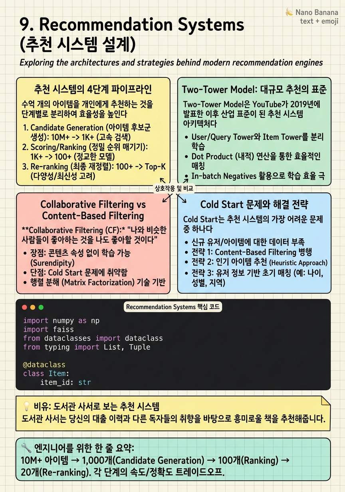

Recommendation Systems

🎯 학습 목표
- 추천 시스템의 Retrieval → Candidate Generation → Ranking → Re-ranking 4단계를 설명할 수 있다
- Two-Tower 모델의 구조와 사용하는 이유를 설명할 수 있다
- Collaborative Filtering과 Content-Based Filtering의 차이와 장단점을 안다
- Cold Start 문제의 두 가지 유형(User Cold Start, Item Cold Start)과 해결 전략을 설명할 수 있다
- 추천 시스템의 Online A/B Testing 설계와 평가 지표를 설명할 수 있다
추천 시스템은 현대 빅테크의 핵심 수익 창출 엔진이다. YouTube는 시청 시간의 70%가 추천에서 시작하고, Netflix는 콘텐츠 소비의 80%가 추천 기반이다. TikTok의 For You Page는 사실상 전체 서비스 경험이다.
추천 시스템 면접은 AI Engineering 직군에서 매우 자주 출제된다. "YouTube의 홈 화면 추천을 설계해봐", "TikTok의 FYP를 설계해봐", "Amazon의 상품 추천을 설계해봐"가 대표적이다.
이 챕터는 단순한 알고리즘 설명이 아니라, 수억 명의 사용자와 수천만 개의 아이템을 실시간으로 처리하는 프로덕션급 추천 시스템 아키텍처를 다룬다. Two-Tower 모델이 왜 대규모 시스템의 표준이 되었는지, Feature Store가 어떻게 통합되는지, 실시간 개인화를 어떻게 달성하는지를 중점적으로 다룬다.
핵심 내용
추천 시스템의 4단계 파이프라인
수억 개의 아이템을 개인에게 추천하는 것을 단계별로 분리하여 효율성을 높인다. 각 단계에서 후보를 좁혀간다.
단계 1: 데이터 수집 및 피처 처리
사용자 행동 로그(클릭, 시청, 구매, 좋아요), 아이템 메타데이터, 컨텍스트(시간, 위치, 디바이스)를 수집하여 Feature Store에 저장.
단계 2: Candidate Generation (후보 생성)
전체 아이템 중에서 사용자에게 관련성 있는 수백~수천 개의 후보를 생성. 이 단계는 속도가 우선이다. 수천만 개 아이템에서 수천 개로 좁히는 필터 역할.
단계 3: Ranking (순위 결정)
후보 수백~수천 개를 정교한 모델로 순위를 매김. 이 단계는 정확성이 우선이다. 더 많은 피처(사용자-아이템 상호작용 피처 포함)를 사용. CTR, 시청 완료율 등 다양한 목표 함수.
단계 4: Re-ranking (재순위)
비즈니스 규칙, 다양성(Diversity), 신선도(Freshness), 필터링(블랙리스트, 중복 제거) 적용. 순수 ML 점수와 비즈니스 목표의 균형.
단계별 후보 수:
- 전체 아이템: 10M+ → Candidate Generation → 1,000개 → Ranking → 100개 → Re-ranking → 20개 → 사용자에게 노출
이 구조를 Funnel Architecture라고 부른다. 각 단계의 정확도와 속도 트레이드오프가 명확하다.
Two-Tower Model: 대규모 추천의 표준
Two-Tower Model은 YouTube가 2019년에 발표한 이후 산업 표준이 된 추천 시스템 아키텍처다.
기본 아이디어:
사용자 타워(User Tower)와 아이템 타워(Item Tower) 두 개의 독립 신경망이 각각 사용자와 아이템을 동일한 임베딩 공간으로 인코딩한다. 사용자와 아이템의 관련성은 두 임베딩 벡터의 내적(dot product) 또는 코사인 유사도로 계산한다.
구조:
`
User Features → [User Tower DNN] → User Embedding (d차원)
Item Features → [Item Tower DNN] → Item Embedding (d차원)
Score = dot(User Embedding, Item Embedding)
`
왜 Two-Tower인가?
- 사전 계산 가능: Item Embedding은 실시간 요청 전에 미리 계산 → 빠른 Candidate Generation - ANN(Approximate Nearest Neighbor)으로 빠른 검색: 사용자 임베딩으로 가장 가까운 Item Embedding들을 FAISS, ScaNN으로 \(O(\log n)\)에 검색 - 독립적 업데이트: User Tower는 실시간 행동으로 동적으로 업데이트, Item Tower는 배치로 업데이트
학습:
- Positive sample: 사용자가 실제 클릭/구매한 아이템 - Negative sample: In-Batch Negatives (같은 배치 내 다른 사용자의 positive 아이템) + Hard Negatives (사용자가 노출됐지만 클릭 안 한 아이템) - 손실 함수: Softmax 또는 Binary Cross-Entropy
Collaborative Filtering vs Content-Based Filtering
Collaborative Filtering (CF):
"나와 비슷한 사람들이 좋아하는 것을 나도 좋아할 것이다". 사용자 행동 데이터(클릭, 구매, 평점)만으로 추천.
- Matrix Factorization: User-Item 행렬을 분해하여 Latent Factor 학습 - Memory-Based CF: 유사 사용자를 찾아 그들이 본 것을 추천 (kNN) - Model-Based CF: Matrix Factorization, Two-Tower
장점: 아이템에 대한 사전 지식 불필요. 놀라운 발견(Serendipity) 가능. 단점: Cold Start — 새 사용자, 새 아이템 추천 어려움. 롱테일 아이템은 데이터 부족.
Content-Based Filtering:
아이템의 속성(장르, 감독, 태그, 텍스트 내용)이 비슷한 것을 추천.
장점: 새 아이템도 추천 가능 (Item Cold Start 해결). 설명 가능성 높음 ("이 장르를 보셨으므로..."). 단점: 아이템 피처 추출 비용. 유사 아이템만 추천 → 다양성 부족. User Cold Start는 여전히 문제.
Hybrid 방식:
현대 추천 시스템은 두 방식을 결합한다: - CF로 Candidate Generation - Content-Based로 재순위 또는 Cold Start 보완 - 딥러닝으로 두 신호를 함께 학습 (Wide & Deep, DeepFM, DIN)
평가 지표:
| 지표 | 설명 | |---|---| | Precision@K | 추천 K개 중 실제 관련 아이템 비율 | | Recall@K | 관련 아이템 중 추천에 포함된 비율 | | NDCG@K | 순위 고려한 품질 지표 | | Coverage | 전체 아이템 중 추천되는 비율 (다양성) | | CTR | 클릭율 (Online 평가) |
Cold Start 문제와 해결 전략
Cold Start는 추천 시스템의 가장 어려운 문제 중 하나다. 데이터가 없는 상황에서 추천을 해야 한다.
User Cold Start (신규 사용자):
행동 기록이 없는 새 사용자에게 무엇을 추천할까?
해결 방법: - Popularity-based fallback: 전체 인기 아이템 추천 (가장 단순하고 효과적인 baseline) - Onboarding 설문: 가입 시 관심사 선택 (Netflix의 "처음 보는 영상 3개 선택") - Demographic-based: 나이, 성별, 지역 등 인구통계 기반 추천 - Cross-domain transfer: 다른 서비스의 데이터 활용 (구글 계정으로 로그인 시)
Item Cold Start (신규 아이템):
새로운 콘텐츠를 누구에게 보여줄까? CF는 상호작용 데이터가 없어서 신규 아이템을 추천 못 한다.
해결 방법: - Content-based bootstrapping: 아이템 속성 임베딩으로 유사 아이템 팬에게 추천 - Exploration budget: 신규 아이템에 일정 비율의 트래픽을 강제 할당 (epsilon-greedy) - Human curation: 에디터가 신규 콘텐츠를 특정 사용자 세그먼트에 노출
Multi-Armed Bandit 접근:
Exploration(새 아이템 노출) vs Exploitation(확실한 아이템 추천) 균형.
- Thompson Sampling: 각 아이템의 CTR에 대한 Beta 분포를 업데이트하며 확률적 탐색 - UCB (Upper Confidence Bound): 불확실한(덜 노출된) 아이템에 보너스 점수 부여
실시간 개인화와 Vector Database
실시간 컨텍스트 반영:
배치 추천의 한계는 "방금 본 것"을 모른다는 것이다. 실시간 개인화는 최근 세션 내 행동을 즉시 반영한다.
구현 방식:
1. 사용자 최근 행동 이벤트 → Kafka → 실시간 User Embedding 업데이트 2. 업데이트된 User Embedding으로 ANN 검색 3. 또는 세션 내 행동을 Short-Term Memory로 DIN(Deep Interest Network)에 입력
Vector Database (벡터 데이터베이스):
Item/User Embedding을 저장하고 빠른 유사도 검색을 제공하는 특수 DB.
- FAISS (Facebook): CPU/GPU 기반 ANN 라이브러리. Billion-scale 지원.
- Milvus: 분산 벡터 DB. Production-grade.
- Pinecone: 완전관리형 벡터 DB. 빠른 시작.
- Weaviate, Qdrant: 오픈소스 벡터 DB.
ANN (Approximate Nearest Neighbor) 알고리즘:
- HNSW (Hierarchical Navigable Small World): 그래프 기반. 높은 정확도, 빠른 검색. 메모리 사용량 많음.
- IVF-PQ (Inverted File + Product Quantization): 클러스터링 + 양자화. 적은 메모리, 약간의 정확도 손실.
임베딩 차원이 높아질수록(128~1024dim) 정확한 최근접 이웃(KNN)은 \(O(n)\)이라 불가능하다. ANN은 약간의 정확도를 포기하고 \(O(\log n)\)에 근사 검색.
💡 비유로 이해하기
추천 시스템은 도서관 사서와 같다. 당신이 도서관에 처음 오면 사서는 당신에 대해 아무것도 모른다(User Cold Start). 일단 베스트셀러 코너로 안내한다.
몇 번 방문하면서 과학 소설을 주로 빌린다는 것을 사서가 알게 됐다. "김씨와 비슷한 취향의 다른 손님들이 자주 빌리는 책"을 추천한다. 이것이 Collaborative Filtering이다.
새로 들어온 책(Item Cold Start)은 어떻게 추천할까? 표지, 목차, 장르를 보고 "이 사람이 좋아할 것 같다"고 판단한다. Content-Based Filtering이다. 두 가지를 모두 참고하는 것이 Hybrid 방식이다.
Funnel Architecture는 사서가 "이 손님에게 어울릴 것 같다" → 100권 선별 → 그중 최근 인기 + 신선도 고려 → 10권 → 오늘 기분에 맞는 것 → 3권 추천하는 과정이다.
💻 코드 예시
FAISS를 이용한 Two-Tower 추천 시스템의 Candidate Generation 단계를 구현한다. 실제 YouTube, Pinterest 등이 사용하는 방식을 단순화한 버전이다.
import numpy as np
import faiss
from dataclasses import dataclass
from typing import List, Tuple
@dataclass
class Item:
item_id: str
embedding: np.ndarray
class TwoTowerCandidateGenerator:
def __init__(self, embedding_dim: int = 64):
self.dim = embedding_dim
# HNSW index: high recall, fast query (good for production)
self.index = faiss.IndexHNSWFlat(embedding_dim, 32) # 32 = M (connections)
self.item_ids: List[str] = []
def build_index(self, items: List[Item]):
"""Build FAISS index from item embeddings (run offline)."""
if not items:
return
embeddings = np.array(
[item.embedding for item in items],
dtype=np.float32
)
# Normalize for cosine similarity via dot product
faiss.normalize_L2(embeddings)
self.index.add(embeddings)
self.item_ids = [item.item_id for item in items]
print(f"Indexed {len(items)} items")
def get_candidates(
self,
user_embedding: np.ndarray,
top_k: int = 500
) -> List[Tuple[str, float]]:
"""Real-time ANN search for candidate items."""
query = user_embedding.reshape(1, -1).astype(np.float32)
faiss.normalize_L2(query)
scores, indices = self.index.search(query, top_k)
return [
(self.item_ids[idx], float(score))
for score, idx in zip(scores[0], indices[0])
if idx != -1
]
# Simulate 1M items with 64-dim embeddings
np.random.seed(42)
items = [
Item(item_id=f"video:{i}",
embedding=np.random.randn(64).astype(np.float32))
for i in range(1_000_000)
]
generator = TwoTowerCandidateGenerator(embedding_dim=64)
generator.build_index(items)
# Real-time: given a user embedding, find top 500 candidates
user_emb = np.random.randn(64).astype(np.float32)
candidates = generator.get_candidates(user_emb, top_k=500)
print(f"Retrieved {len(candidates)} candidates")
print(f"Top-3: {candidates[:3]}")100만 개 아이템에서 500개 후보를 찾는 ANN 검색이 수 밀리초 안에 완료된다. 브루트포스 KNN은 1M * 64dim 연산으로 수백ms가 걸리지만, HNSW는 로그 시간 복잡도로 처리한다. faiss.normalize_L2로 코사인 유사도를 내적으로 변환한다. 실제 프로덕션에서는 이 단계의 결과 500개가 다음 Ranking 단계로 넘어간다.
🏭 현업에서의 평가
✅ 시니어가 보는 것
- Funnel 아키텍처(Retrieval → Ranking → Re-ranking)를 명확히 설명하는가
- Two-Tower 모델이 대규모 시스템에 적합한 이유를 설명하는가
- Cold Start를 다양한 방법으로 해결할 수 있는가
- Online A/B Test 설계와 평가 지표를 알고 있는가
⚠️ 레드 플래그
- Collaborative Filtering만 말하고 대규모 환경에서의 한계를 인지 못 함
- Candidate Generation과 Ranking의 구분이 없는 설계
- Cold Start 문제를 언급하지 않는 경우
- Offline metrics만 고려하고 Online A/B Test를 언급 안 하는 경우
🎤 예상 인터뷰 질문
- TikTok의 For You Page 추천 시스템을 설계해봐.
- Two-Tower 모델에서 Hard Negative Sampling이 왜 중요한가?
- 추천 시스템의 다양성(Diversity)을 어떻게 측정하고 높이겠어?
✨ 핵심 요약
Funnel Architecture가 핵심
10M+ 아이템 → 1,000개(Candidate Generation) → 100개(Ranking) → 20개(Re-ranking). 각 단계의 속도/정확도 트레이드오프.
Two-Tower = 사전 계산 가능
Item Embedding을 미리 계산해두고 ANN 검색으로 실시간 서빙. 수억 아이템을 수밀리초에 검색하는 이유.
ANN이 KNN을 대체
수백만 임베딩에서 정확 KNN은 불가능. FAISS HNSW로 ~10ms에 근사 검색.
Cold Start에 두 가지 전략
User Cold Start: 인기 아이템 + 온보딩. Item Cold Start: Content-based + Exploration budget.
Offline과 Online 지표는 다르다
Offline에서 NDCG가 높아도 Online CTR이 낮을 수 있다. 반드시 A/B Test로 검증하라.
Diversity를 설계에 포함
같은 장르만 추천하면 User는 질린다. Re-ranking에서 다양성을 명시적으로 추가하라.
Feature Store가 실시간 개인화 가능하게
세션 내 최근 행동을 Online Feature Store에서 실시간으로 조회하여 즉각적인 개인화.
Exploration이 없으면 Echo Chamber
Exploitation만 하면 사용자는 같은 유형의 콘텐츠만 보게 된다. Multi-Armed Bandit으로 균형을 맞춰라.